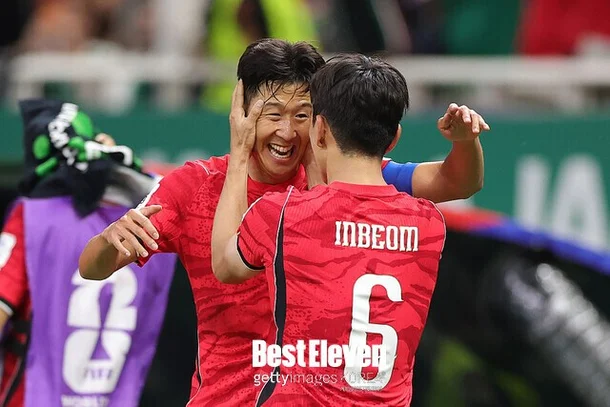

[오피셜] "갈등 아니다, 은퇴 조건 요구도 사실무근"…손흥민·김민재 등 5명, 대표팀 불화설에 공동 입장문 발표 : 네이트 스포츠

다음은 대한축구협회가 공개한 손흥민 등 논란의 중심에 섰던 다섯 선수가 공동 명의로 발표한 입장문이다.
먼저, 최근 대표팀과 관련한 여러 보도로 국민 여러분과 축구 팬 여러분께 걱정을 끼쳐 드린 점 죄송하게 생각합니다.
저희는 이번 소집에서 함께 모여 대표팀에 관한 서로의 생각을 솔직하게 나누었습니다.
그동안 충분히 이야기하지 못했던 부분을 직접 듣고 또 설명하면서 서로의 입장을 더 잘 이해할 수 있었습니다.
무엇보다 저희 모두가 같은 마음이라는 것을 다시 확인했습니다.
잠시 정체된 대한민국 축구가 지금보다 더 발전해야 하고,
역사와 위상에 걸맞은 경기력과 성적으로 국민 여러분의 응원에 보답해야 한다는 것입니다.
당연히 그 마음은 이전에도 같았고, 지금도 변함이 없습니다.
장거리 비행 직후였지만,
짧지 않은 시간 이어진 대화에서는 대표팀의 준비 과정과 운영에 관해 각자가 느껴온 생각을 가감 없이 나누었습니다.
지난 월드컵에서 국민 여러분께 실망을 드렸던 후회와 아쉬움은 지금도 저희 모두에게 남아 있고,
같은 일을 반복하지 않으려면 무엇이 달라져야 하는지가 그 고민의 출발점이었습니다.
분명히 말씀드리고 싶은 것은,
저희 대표팀 선수들이 특정 선수와의 개인적인 갈등이나 특정 사안에 대한 이해관계에서 비롯된 것이 아니라,
대표팀이 더 나아져야 한다는 공통된 문제의식에서 출발했다는 점입니다.
또한 은퇴를 조건으로 특정한 요구를 관철하려 했다는 것은 전혀 사실이 아닙니다.
그동안 관련 보도에 일일이 설명드리지 않은 것은,
대표팀에 관한 문제는 먼저 내부에서 충분히 이야기하고 해결해 나가는 것이 맞다고 생각했기 때문입니다.
사실과 다르게 알려진 부분도 많이 있었지만,
각자 소속팀에서 활동하며 서로 직접 만나기 어려운 상황에서 충분한 대화 없이 개별적으로 입장을 밝히는 것은 오히려 또 다른 오해를 낳을 수 있다고 판단했습니다.
무엇보다 대표팀이 더 나아지기를 바라는 마음에서 시작된 논의가 확인되지 않은 소문으로 확대되고,
선수들 사이의 갈등으로 비치면서 그 본래의 취지가 가려지는 것을 원하지 않았습니다.
이제는 불필요한 논란을 뒤로하고,
앞으로 함께 만들어 갈 대표팀에 집중하려 합니다.
저희는 오랜 시간 한국 축구를 위해 함께 뛰어왔고,
앞으로도 같은 목표를 향해 나아갈 동료입니다.
서로의 역할과 책임을 존중하고 신뢰하며,
한국 축구의 다음 페이지를 써 내려갈 젊은 선수들에게도 좋은 본보기가 되도록 함께 노력하겠습니다.
다음 아시안컵까지 주어진 시간을 더 철저히 준비하는 기회로 삼겠습니다.
협회와도 더 긴밀하게 소통하며 지난 대회에서의 아쉬움과 후회가 반복되지 않도록 하겠습니다.
국민 여러분께서 기대하시는 것은 저희의 설명보다 경기장에서 보여드리는 진심과 좋은 경기력이라는 것을 잘 알고 있습니다.
이번 평가전에서도 한마음으로 최선을 다하여,
한국 축구의 역사와 위상에 걸맞는 경기력과 자세로 여러분의 격려와 응원에 보답하겠습니다.
감사합니다. 손흥민 이재성 김민재 황인범 황희찬
기레기들 땜에 고생하는거지 머..